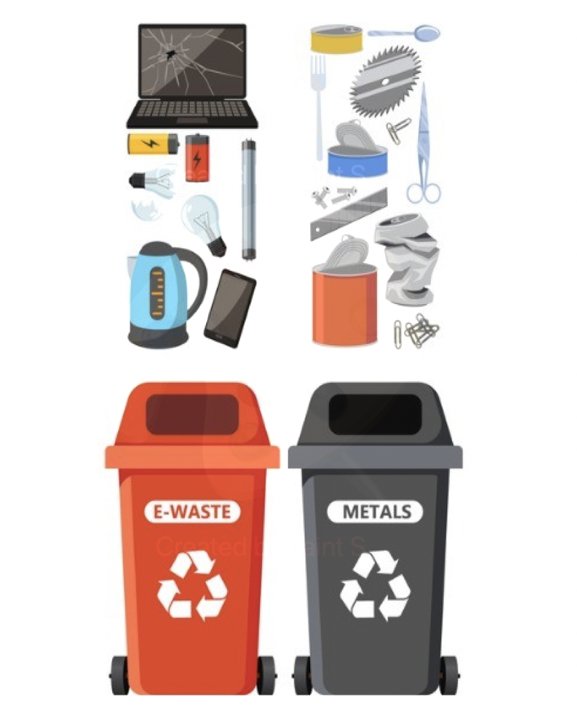

Recyclable wastes
Recyclable wastes, encompassing a diverse range of materials like paper, plastic, and glass, hold a reservoir of untapped potential that can redefine our approach to waste management and resource conservation. Within the fibers of discarded paper lies the promise of renewable paper production, reducing the demand for fresh trees and minimizing deforestation. The malleable nature of plastic waste invites innovation—transforming it into new products not only curtails plastic pollution but also extends the life cycle of this versatile material. Amid the shards of discarded glass, a vibrant spectrum of possibilities emerges, from crafting new glassware to paving the way for energy-efficient manufacturing processes. Harnessing the potential within these recyclable materials is not merely an act of environmental responsibility; it is a visionary stride toward a circular economy where what was once discarded becomes the cornerstone of sustainable progress.
Click here to find cool step by step guides and videos on the above👆
Organic wastes
Organic wastes hold a world of untapped potential, offering a sustainable solution that aligns with both environmental conservation and resource enhancement. These biodegradable materials, including food scraps, yard trimmings, and other plant-based waste, possess the remarkable ability to be transformed into nutrient-rich compost. This compost, when returned to the earth, not only enriches soil quality but also stimulates healthier plant growth. In households, the potential of organic waste is vividly evident. Imagine a kitchen where discarded fruit peels, coffee grounds, and vegetable cuttings are collected and composted instead of ending up in a landfill. This compost can then nourish home gardens, yielding an abundance of fresh produce. Similarly, yard waste, such as leaves and grass clippings, can be repurposed into a natural fertilizer, reducing the need for synthetic alternatives. By harnessing the potential within organic waste, we close the loop on a vital cycle, demonstrating that even the most mundane of materials can contribute to a flourishing ecosystem and a more sustainable future.
Click here to find cool step by step guides and videos on the above👆

E-wastes
In the heart of our households, an often overlooked wealth awaits, E-wastes and discarded metals that hold immense potential for both environmental sustainability and resource conservation. E-wastes, such as old smartphones, laptops, and electronic gadgets, harbor valuable components like precious metals, rare earth elements, and intricate circuitry. By responsibly recycling these items, we not only recover these precious resources but also prevent harmful chemicals from leaching into the environment. For instance, a single smartphone contains trace amounts of gold, silver, and other valuable materials that, when reclaimed, can reduce the need for mining and its associated ecological impacts. Similarly, metals like aluminum, copper, and steel from everyday items like beverage cans, wires, and appliances can be melted down and repurposed, significantly reducing energy consumption and minimizing the demand for raw ore extraction. Our homes, once unwittingly harboring potential treasure troves, now present us with an opportunity to contribute to a more sustainable future. By recognizing the value embedded in our E-wastes and metals, we can embark on a journey that marries technology with environmental responsibility, turning discarded items into catalysts for positive change.
Click here to find cool step by step guides and videos on the above👆